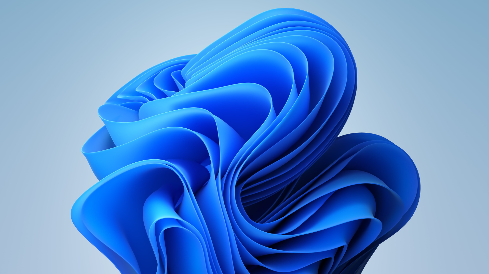

Instalare Windows pe calculator sau laptop
Instalare Windows 11,10, 8.1, 7
Instalăm sistemul de operare Windows 11, la sediul nostru sau domiciliul clientului în Brașov și imprejurimi, la prețuri accesibile.
Pachet Instalare Windows pe calculator sau laptop
- Se salvează datele vechi (nu se pierd poze, documente, etc.);
- Dacă este nevoie, se repartiţionează hard disk-ul pentru ca partiţia C să aibă suficient spaţiu;
- Se instalează toate driverele componentelor (driver de placă de bază, placă video, sunet, reţea, etc);
- Se instalează program ANTI-MALWARE ( împotriva malware de tip “Poliţia Română”).
- Se instalează programe de bază (Chrome, codec-uri de filme, program de scris CD-uri, Skype, Zoom, Winamp, µTorrent, etc.).
- Se configurează secvenţa de pornire a calculatorului (atunci când încarcă Windows-ul, să pornească doar programele strict necesare).
Intrebari frecvente
Varianta sistemului de operare se alege în funcţie de performanţa PC-ului. Când soseşti în service, tehnicienii noştri îţi vor recomanda ce tip de Windows o să funcţioneze cel mai bine.
Conform specificaţiilor producătorului: Procesor minim 1GHZ, Memorie RAM 1-2GB, 16GB hard disk. Din experienţă, îţi spunem că pe o astfel de configuraţie până se va deschide Google Chrome, bei o ceaşcă de cafea. Prin urmare pentru a rula decent Windows 10 pe un laptop, cerinţele minime sunt: Procesor minim Dual Core generaţie nouă, 4GB RAM DDR3, hard disk SATA III (recomandat SSD).
Stai fără griji, datele tale vor fi salvate şi nu se va pierde nimic. Putem face backup inclusiv la programe precum Saga, mail Outlook, programe de facturare, practic orice se poate salva.
Dacă ai cumpărat laptopul/ calculatorul cu licenţă preinstalată, aceasta se poate reinstala fără probleme, astfel încât să beneficieze în continuare de licenţă.